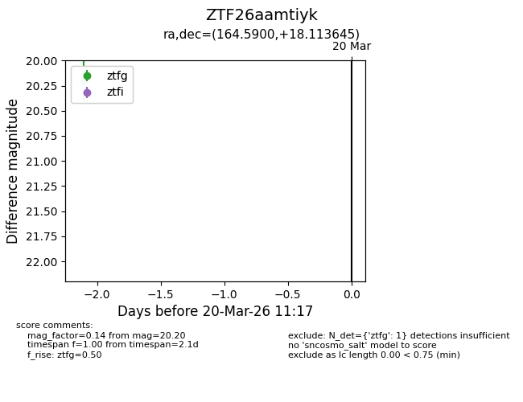
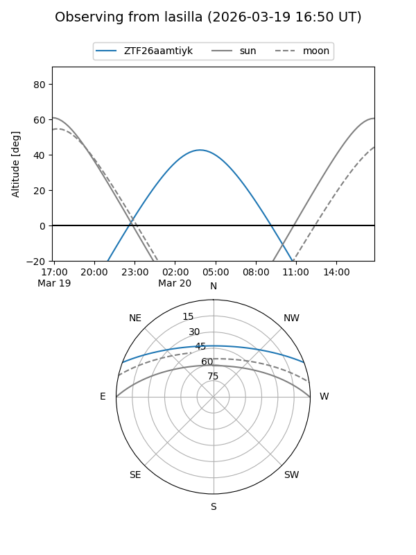
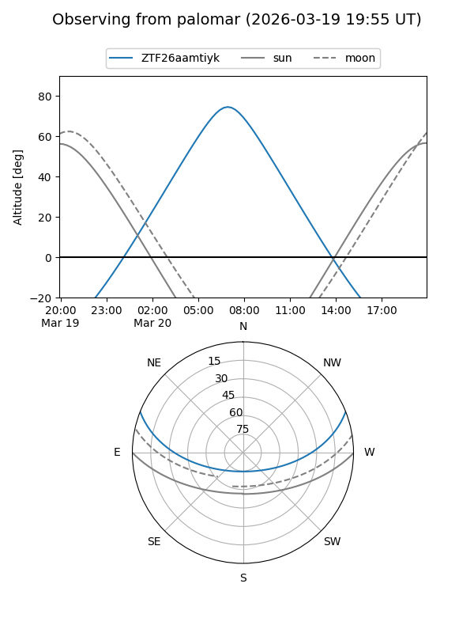

ZTF26aamtiyk
Target ZTF26aamtiyk at 2026-03-20 11:19
Aliases and brokers:
FINK: link
Lasair: link
ALeRCE: link
alt names
ZTF26aamtiyk (ztf,fink_ztf)
Coordinates:
equatorial (ra, dec) = 164.5900,+18.11364
equatorial (HMS+DMS) = 10:58:21.61,+18:06:49.12
galactic (l, b) = (226.0614,+62.46891)
Flags:
Photometry:
last ztfg=20.20
1 ztfg detections
Lightcurve

Visibility


Additional plots